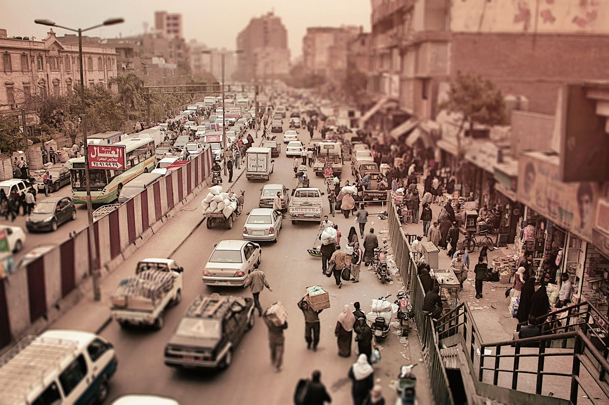
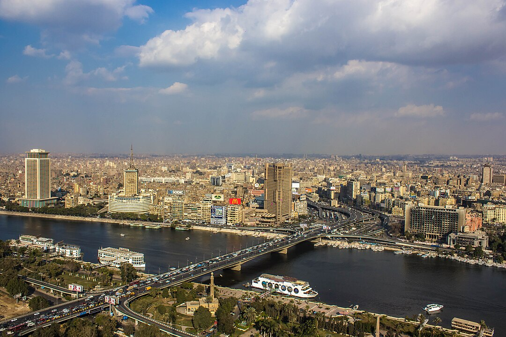
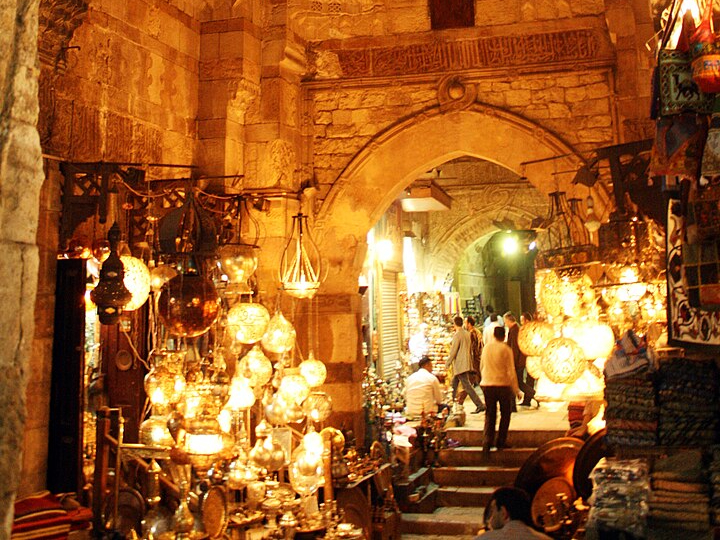
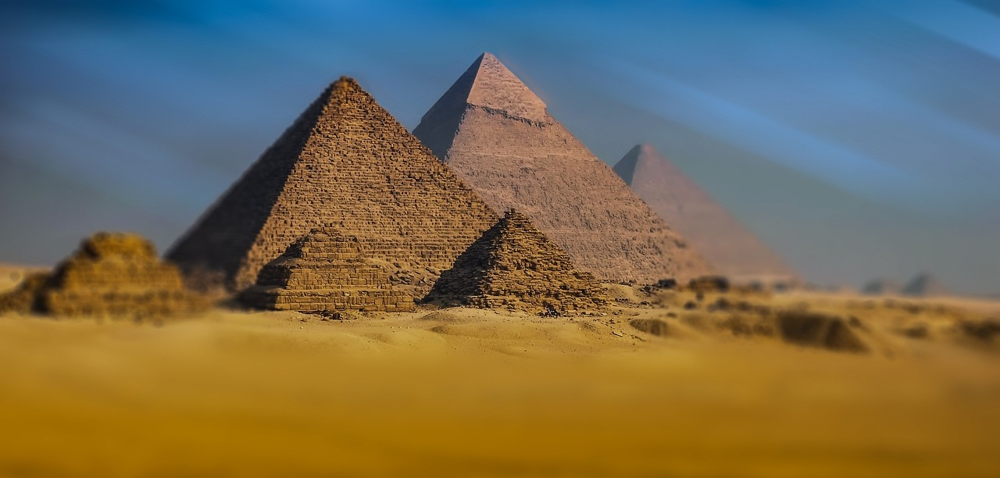
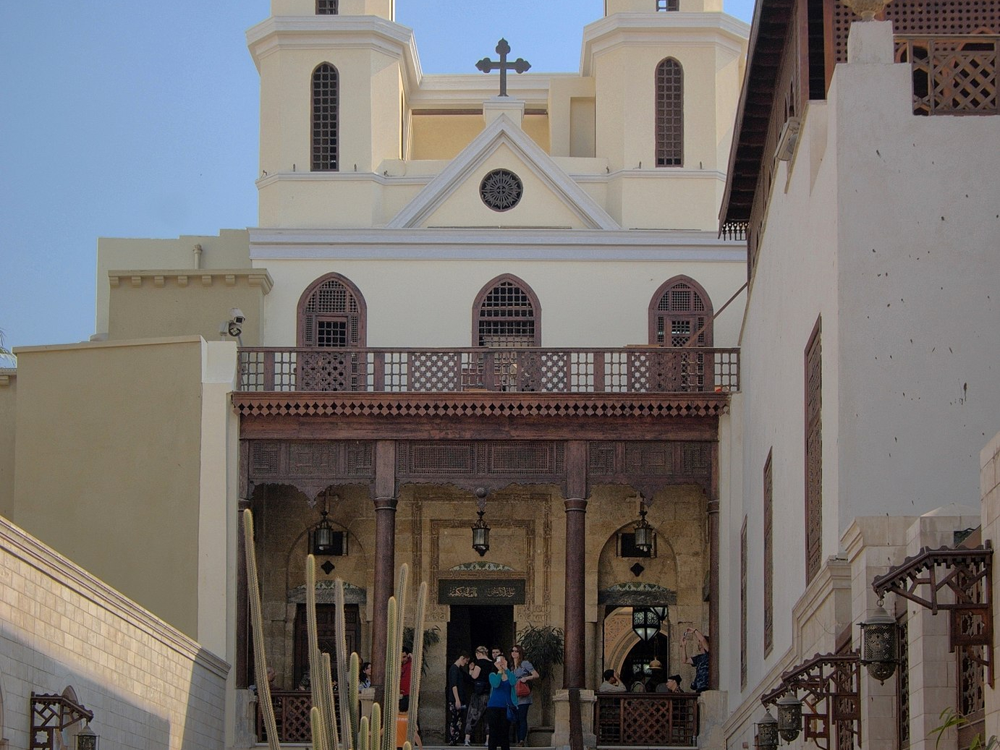

Kair
Kair, stolica Egiptu, to jedno z najstarszych i najbardziej fascynujących miast na świecie, będące świadkiem tysięcy lat historii. Położony nad rzeką Nil, Kair od wieków pełnił funkcję politycznego, kulturalnego i religijnego centrum regionu. Jest to miasto, które łączy w sobie starożytną historię z nowoczesnością, a jego bogata przeszłość i różnorodna kultura przyciągają turystów z całego świata.
Historia
Historia Kairu zaczyna się już w czasach starożytnych. Chociaż samo miasto zostało założone w 969 roku n.e. przez dynastię Fatymidów, jego korzenie sięgają o wiele głębiej. W jego okolicach rozwijały się najważniejsze cywilizacje starożytnego Egiptu, z faraońskim Memfis na czele. To właśnie w pobliżu Kairu wznoszą się najsłynniejsze symbole starożytnej potęgi Egiptu: Piramidy w Gizie i Wielki Sfinks, które powstały około 2500 roku p.n.e. Fatymidzi założyli Kair jako swoją stolicę i zbudowali wiele wspaniałych budowli, w tym meczety i pałace. W kolejnych wiekach miasto było pod panowaniem Ajjubidów, Mameluków i Osmanów, a każda z tych epok pozostawiła po sobie cenne dziedzictwo architektoniczne i kulturalne.
W czasach nowożytnych, w XIX i XX wieku, Kair stał się jednym z najważniejszych miast świata arabskiego i afrykańskiego. Wraz z budową Kanału Sueskiego i rozwojem infrastruktury kolejowej miasto zaczęło się intensywnie rozwijać. Obecnie Kair jest największym miastem na Bliskim Wschodzie i w Afryce, a także ważnym centrum nauki, sztuki i polityki.
Kultura
Kultura Kairu to niezwykła mieszanka tradycji starożytnego Egiptu, wpływów islamskich i współczesnych trendów. Miasto jest siedzibą wielu ważnych instytucji kulturalnych, takich jak Opery Kairskiej czy Instytutu Orientalistyki, które promują zarówno tradycyjną, jak i nowoczesną sztukę. Życie codzienne w Kairze jest pełne kolorów i dźwięków – od tradycyjnych bazarów, takich jak słynny Khan el-Khalili, po nowoczesne centra handlowe. Uliczne kawiarnie serwujące herbatę i kawę, w otoczeniu arabskiej muzyki, to miejsca, gdzie mieszkańcy i turyści mogą poczuć klimat miasta.
Atrakcje
W Kairze znajduje się wiele ważnych zabytków i atrakcji. Najbardziej rozpoznawalne są oczywiście Piramidy w Gizie, w tym Wielka Piramida Cheopsa, która jest jednym z Siedmiu Cudów Starożytnego Świata i jedynym, który przetrwał do dziś. W samym Kairze można podziwiać Muzeum Egipskie, które mieści jedną z największych na świecie kolekcji artefaktów związanych z cywilizacją starożytnego Egiptu, w tym słynne skarby z grobowca Tutanchamona. Miłośnicy historii islamskiej mogą odwiedzić Cytadelę Saladyna, imponującą fortecę z XII wieku, oraz znajdujący się w jej obrębie Meczet Muhammada Alego, znany ze swojego piękna i panoramicznego widoku na miasto.
Dzielnica Stary Kair to miejsce, gdzie można odkrywać różnorodne tradycje religijne. Znajdują się tam zarówno zabytkowe meczety, jak i kościoły koptyjskie, takie jak Kościół Świętej Dziewicy Maryi (znany jako Wiszący Kościół), oraz synagogi, które świadczą o wielokulturowej historii miasta. Z kolei bardziej współczesną stronę Kairu można zobaczyć w dzielnicach takich jak Zamalek, gdzie mieszczą się luksusowe restauracje, galerie sztuki i nowoczesne budynki.
Kair to również miasto, które nigdy nie śpi. Życie nocne jest intensywne, od tradycyjnych występów muzycznych i tańca brzucha po nowoczesne kluby. Kuchnia Kairu oferuje niepowtarzalne smaki – od klasycznych dań takich jak kushari, czyli mieszanka ryżu, makaronu i soczewicy, po rozmaite słodycze, w tym baklawę i kunafę.
Obecnie Kair zmaga się z wyzwaniami, takimi jak przeludnienie czy zanieczyszczenie, ale mimo to pozostaje jednym z najbardziej urzekających miast na świecie. To miejsce, które łączy tysiące lat historii z dynamiką współczesnego życia, oferując niezapomniane wrażenia każdemu, kto je odwiedza.